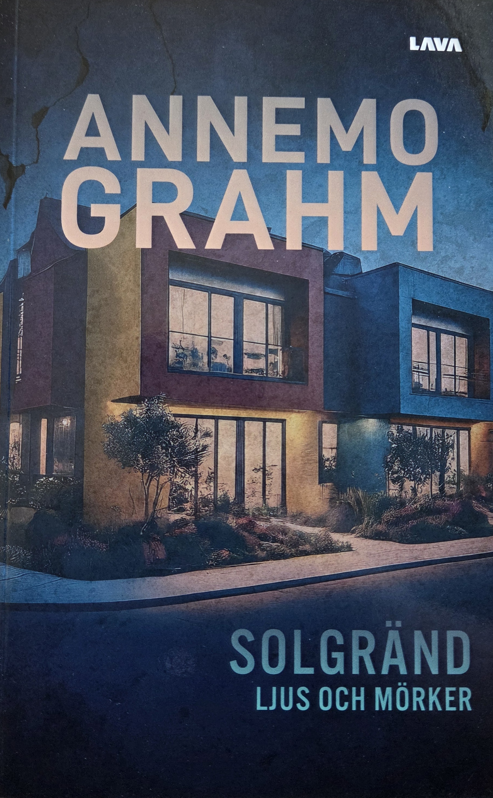

2024 · Roman · Del 1
Solgränd - Ljus och mörker
Välkommen till Solgränd, en gata där fasaderna är vackra, men där en hemlighet döljer sig bakom varje dörr.
I denna gripande roman möter vi fyra familjer som nyligen flyttat in på samma gata.
Varje familj bär på hemligheter som hotar att spränga deras till synes idylliska liv.
Anna kämpar med et alkoholberoende som hon inte kan erkänns för sig själv.
Fredrik brottas med sin sexuella identitet, fast i en fasad av traditionellt familjeliv.
Märta ristar in en ny initial för varje erövring, medans Sara, polisen, lever under kontrollen av sin dominerande man.
Denna psykologiska thriller öppnar med ett chockerande mord och väver skickligt ihop deras berättelser i ett nät av intriger och förbjudna relationer.
Vem är offret? Vem döljer sig i skuggorna? Och viktigast av allt, vem kan man lita på i en värld där fasader är allt?
Solgränd - Ljus och mörker är en berättelse om hemligheter, närhetens komplexitet och konsekvenserna av att inte våga lita på andra.